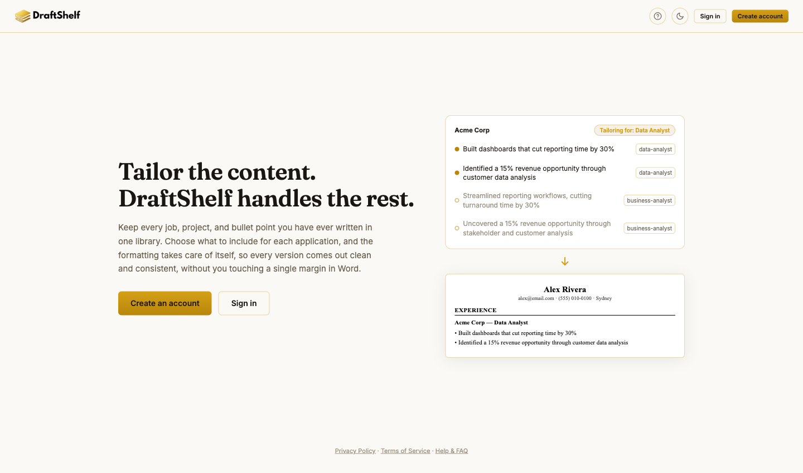
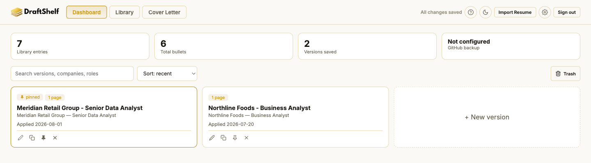
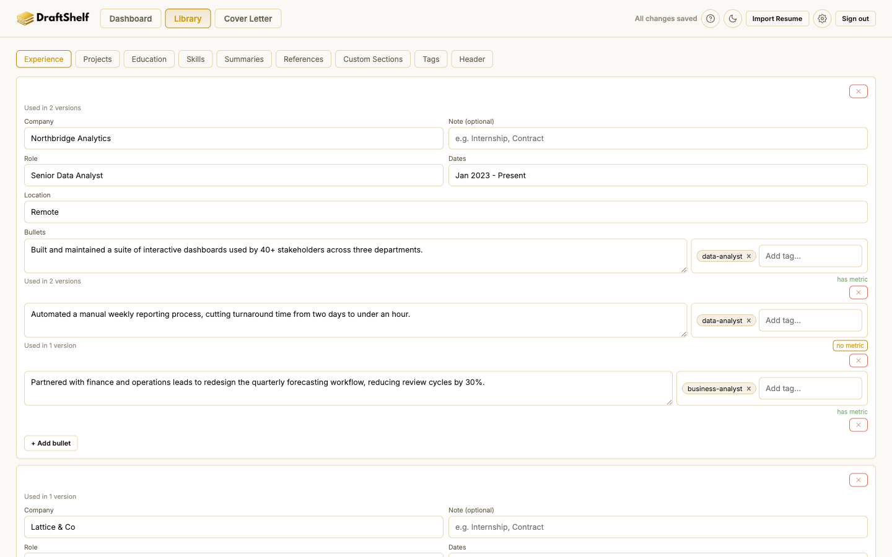
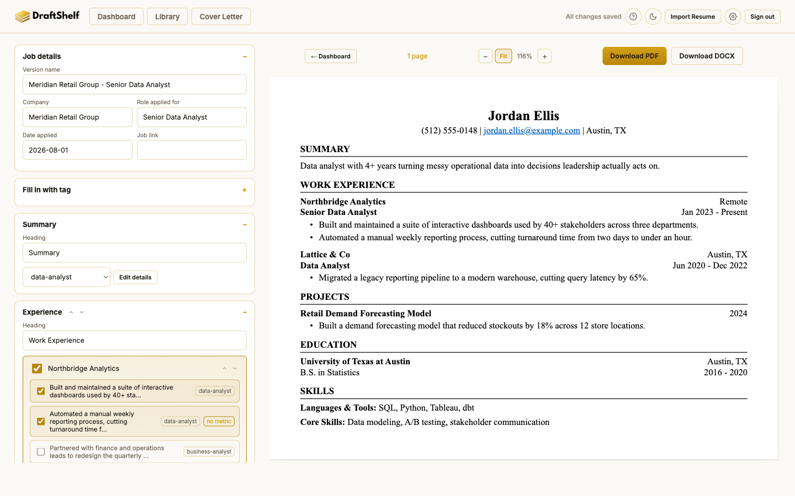

Everything below is about using DraftShelf itself. If you can't find your answer, email us directly and we'll get back to you.
The four things you'll do on your very first visit -- from a real, signed-in walkthrough.
Sign up with an email and password, or with Google or GitHub. There's no free trial to track and no guest mode -- every account is fully free, and everything you enter is private to you.

Every tailored resume you build lives here as its own card. A brand-new account starts empty -- click "+ New version" whenever you're ready for your first one.

The Library tab is where every job, project, school, and skill you've ever had lives -- add it once here. Each entry can hold several bullet points, and you'll pick which ones to use per resume later.

Open a version, check off which Library entries and bullets belong on this particular resume, and watch the preview on the right update live. When it looks right, click Download PDF or Download DOCX in the top-right corner.

Short answers to the questions we hear most.
Common snags and how to clear them.
Terms used throughout the app.
DraftShelf is an independently run tool, not a company with a support team -- email is genuinely the fastest way to reach a real person.
For questions, bug reports, or feedback on this help page itself:
ariadaikalam1234@gmail.com